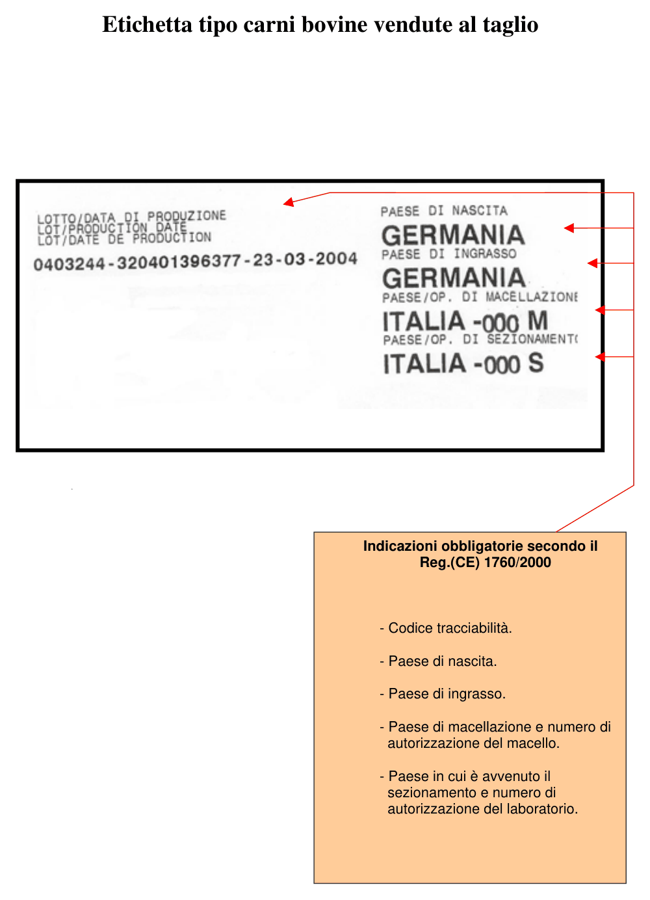
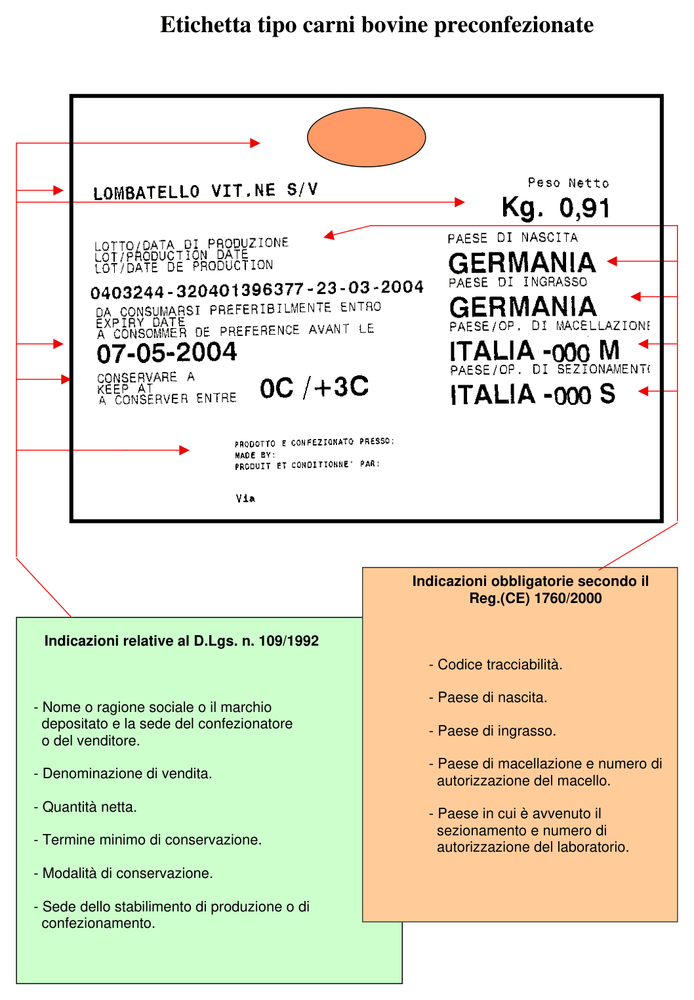
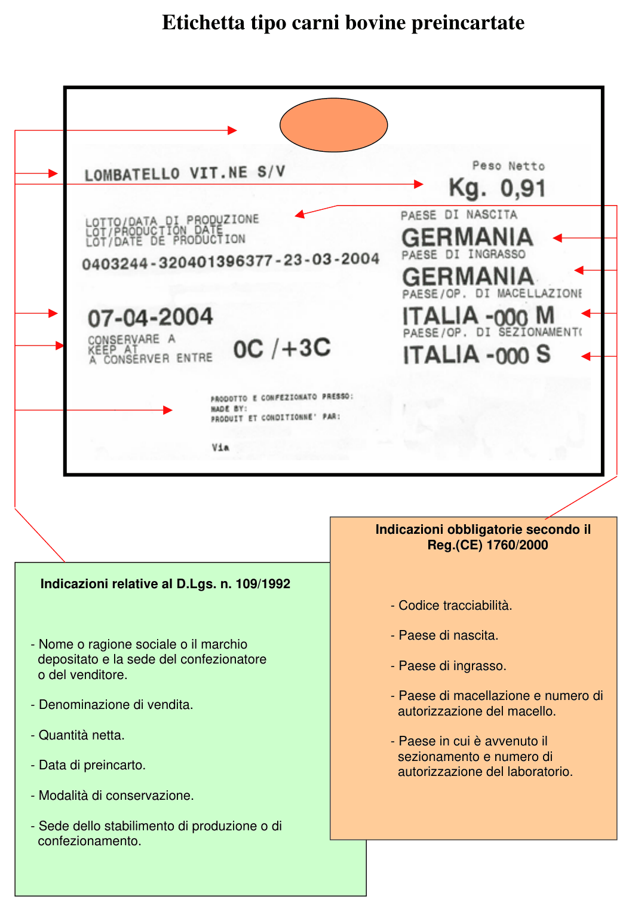
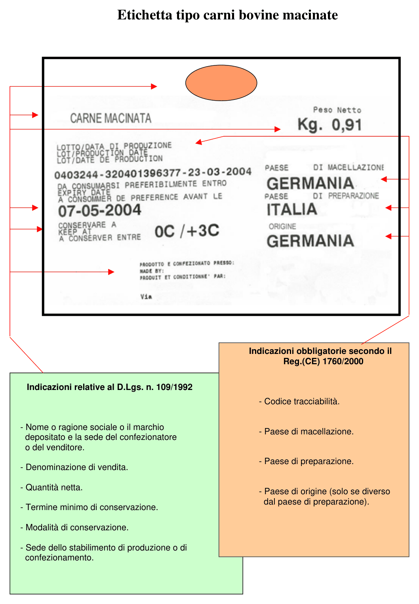

Normativa europea e italiana sull'etichettatura delle carni bovine
Gli obblighi di tracciabilità descritti in questa guida derivano da regolamenti europei e da decreti italiani. Questa pagina riassume la circolare del 30 marzo 2004 (prot. 21167) sui controlli dell'etichettatura delle carni bovine: è il documento che indica agli uffici di controllo che cosa verificare nei punti vendita, ed è quindi anche l'elenco di ciò che una macelleria deve avere in ordine.
Documento del 2004: verifica la normativa vigente
La circolare cita le norme in vigore alla data di emissione e riguarda solo le carni bovine. Da allora il quadro è cambiato: in particolare la disciplina generale dell'etichettatura degli alimenti del D.Lgs. 109/1992 è stata in seguito superata dal Reg. (UE) n. 1169/2011 sulle informazioni sugli alimenti ai consumatori. Usa questa pagina come riferimento di base e verifica sempre le disposizioni aggiornate prima di dare indicazioni a un cliente.
Le norme di riferimento
| Norma | Livello | Che cosa riguarda |
|---|---|---|
| Reg. (CE) n. 1760/2000 | Europeo | Etichettatura delle carni bovine e dei prodotti a base di carni bovine. L'articolo 12 individua i prodotti soggetti all'obbligo; il regolamento fissa le indicazioni obbligatorie in etichetta |
| Reg. (CE) n. 1825/2000 | Europeo | Citato insieme al 1760/2000 tra i regolamenti sull'etichettatura delle carni bovine e dei prodotti a base di carni bovine |
| D.Lgs. 29 gennaio 2004, n. 58 | Italiano | Disposizioni sanzionatorie per le violazioni dei due regolamenti europei |
| D.Lgs. n. 109/1992 | Italiano | Indicazioni generali da riportare in etichetta sui prodotti preconfezionati, preincartati e macinati: denominazione di vendita, quantità netta, conservazione, confezionatore |
La disciplina comunitaria ha una duplice finalità:
- assicurare la massima trasparenza nella commercializzazione, dando al consumatore informazioni più precise;
- garantire un sistema di tracciabilità.
A quali prodotti si applica
Sono soggetti all'obbligo di etichettatura (art. 12 del Reg. 1760/2000):
- tutta la carne bovina fresca, refrigerata o congelata (codici doganali 0201 e 0202);
- i pilastri del diaframma (onglets) e il diaframma (hampes), freschi o congelati (codici doganali 0206 1095 e 0206 2991);
- la carne macinata.
Sono esclusi:
- le preparazioni a base di carne, intese come carni a cui sono stati aggiunti ingredienti diversi dal sale;
- le frattaglie non comprese nelle voci doganali indicate sopra.
Macinato e preparati nella guida
Il macinato rientra nell'obbligo e ha un'etichetta tipo dedicata. Polpette e polpettone, che contengono altri ingredienti, sono invece preparazioni: in questa guida sono gestiti con il lotto di produzione e con un'etichetta diversa. Vedi Dalla mezzena al macinato e Etichette parlanti e immagini.
Dove avvengono i controlli
I controlli si svolgono nei punti vendita che commercializzano, lavorano ed etichettano le carni bovine per la vendita diretta al consumatore finale:
- punti vendita con preparazioni di carne preconfezionate o preincartate;
- punti vendita di carne venduta al taglio.
In pratica: grande distribuzione organizzata e macellerie. I punti precedenti della filiera, cioè macelli e laboratori di sezionamento, sono seguiti dai Servizi sanitari nazionali.
Che cosa viene verificato
- L'autorizzazione sanitaria.
- La presenza dell'etichetta obbligatoria e delle relative informazioni:
- codice di rintracciabilità;
- Nato in: Paese di nascita;
- Ingrassato in: Paese o Paesi di allevamento;
- Macellato in: Paese di macellazione e numero di approvazione del macello;
- Sezionato in: Paese di sezionamento e numero di approvazione del laboratorio di sezionamento.
- L'adozione di un sistema di tracciabilità idoneo per l'identificazione della carne.
- L'eventuale presenza in etichetta di informazioni facoltative (presenza del codice di autorizzazione ministeriale).
- La corrispondenza delle indicazioni in etichetta con il sistema di registrazione adottato e con i relativi riscontri (bolle di consegna e fatture), oltre che con l'etichetta che accompagnava il prodotto, eventualmente prima delle lavorazioni effettuate nel punto vendita.
Controlli a sondaggio
La verifica del punto 5 viene fatta a sondaggio, su almeno il 10% dei prodotti controllati. Sempre a sondaggio viene verificato che le informazioni facoltative in etichetta corrispondano a quelle approvate nel relativo disciplinare di etichettatura.
Le indicazioni obbligatorie per tipo di vendita
La circolare allega quattro etichette tipo. Le indicazioni cambiano secondo il modo in cui la carne viene venduta.
Indicazioni del Reg. (CE) 1760/2000
| Indicazione | Al taglio | Preconfezionate | Preincartate | Macinate |
|---|---|---|---|---|
| Codice di tracciabilità | SI | SI | SI | SI |
| Paese di nascita | SI | SI | SI | - |
| Paese di ingrasso | SI | SI | SI | - |
| Paese di macellazione | SI, con numero di autorizzazione del macello | SI, con numero di autorizzazione del macello | SI, con numero di autorizzazione del macello | SI |
| Paese di sezionamento e numero di autorizzazione del laboratorio | SI | SI | SI | - |
| Paese di preparazione | - | - | - | SI |
| Paese di origine | - | - | - | Solo se diverso dal Paese di preparazione |
Indicazioni del D.Lgs. 109/1992
Si aggiungono a quelle del regolamento per le carni preconfezionate, preincartate e macinate. L'etichetta tipo della carne venduta al taglio riporta solo le indicazioni del regolamento.
| Indicazione | Preconfezionate | Preincartate | Macinate |
|---|---|---|---|
| Nome o ragione sociale o marchio depositato e sede del confezionatore o del venditore | SI | SI | SI |
| Denominazione di vendita | SI | SI | SI |
| Quantità netta | SI | SI | SI |
| Termine minimo di conservazione | SI | - | SI |
| Data di preincarto | - | SI | - |
| Modalità di conservazione | SI | SI | SI |
| Sede dello stabilimento di produzione o di confezionamento | SI | SI | SI |
Le etichette tipo

Carni bovine vendute al taglio.

Carni bovine preconfezionate.

Carni bovine preincartate.

Carni bovine macinate.
Contestazioni e sanzioni
Secondo l'articolo 9 del D.Lgs. 58/2004, l'organo che riceve il rapporto sulle violazioni accertate, quando il trasgressore non paga in misura ridotta, è la Regione o la Provincia autonoma: a queste autorità compete erogare le sanzioni amministrative.
Dalla norma al software
Le verifiche previste dalla circolare corrispondono a operazioni descritte in questa guida.
| Che cosa viene verificato | Dove si gestisce |
|---|---|
| Informazioni obbligatorie in etichetta | Definizioni tracciabili: ogni informazione è un campo della definizione, che può essere reso obbligatorio |
| Sistema di tracciabilità per identificare la carne | Carico della mezzena e del lotto e Vendita al banco con il lotto |
| Riscontro con bolle di consegna e fatture | Il lotto nasce dal carico del documento del fornitore: Carico della mezzena e del lotto |
| Lavorazioni effettuate nel punto vendita | Eseguire una trasformazione e Rintracciabilità dei lotti |
| Informazione al consumatore | Etichette parlanti e immagini e Totem, code e cassa |
I campi della definizione sono liberi
Se al cliente serve riportare un dato previsto dalla norma, per esempio il numero di approvazione del macello o del laboratorio di sezionamento, basta aggiungere un campo alla definizione tracciabile e decidere se inviarlo alla bilancia.